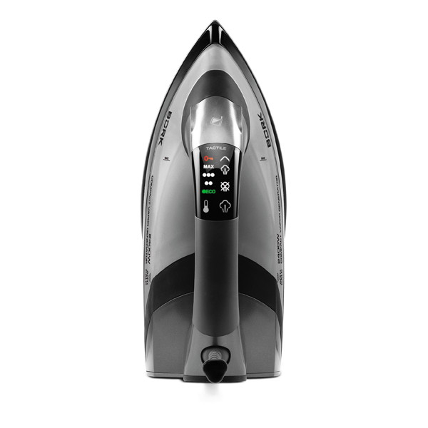
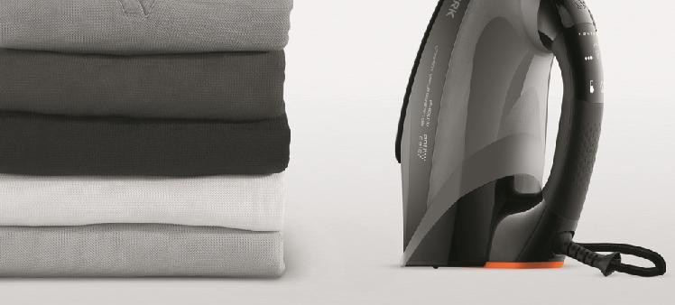
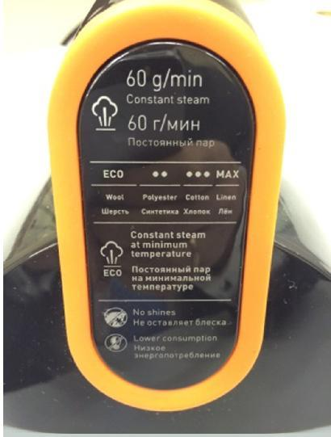
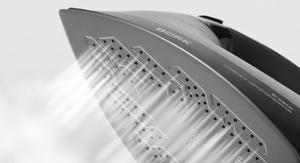
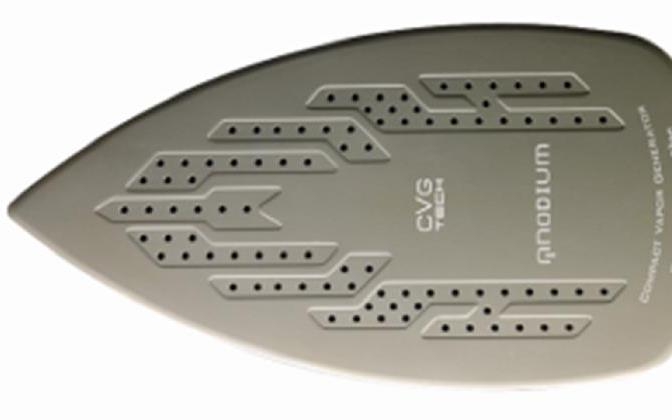
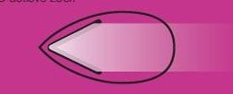
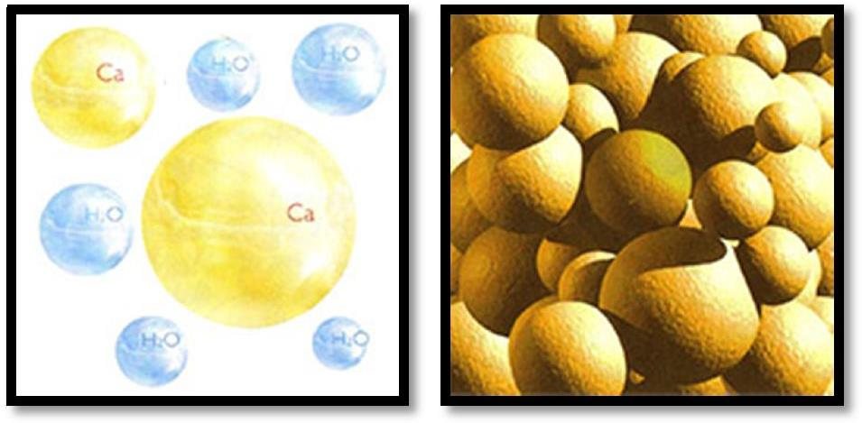
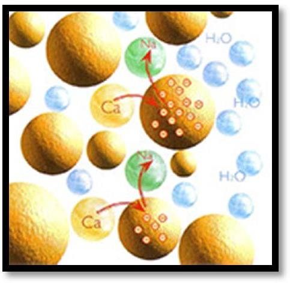
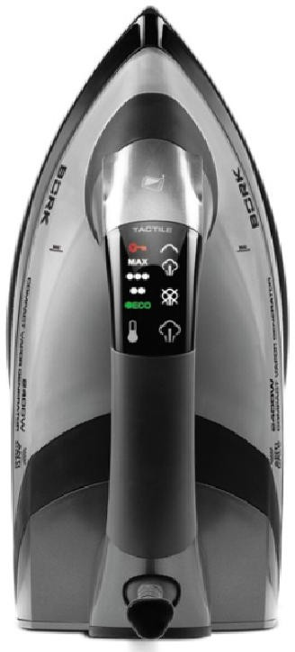

Утюг I604
Генерирование постоянной подачи пара 60 г/мин при низкой температуре подошвы утюга
Гарантируется постоянная температура по всей площади подошвы. Это достигается тем, что пар образуется не за счёт нагревательного элемента подошвы утюга, а встроенным парогенератором(шерсть не гладят на высокой температуре, чтобы не прижечь волокна).
 Вертикальное и горизонтальное отпаривание
Постоянная подача пара даже на низкой температуре в течение продолжительного времени позволяет гладить деликатные ткани — шерсть, шелк, акрил, не опасаясь образования блеска на поверхности ткани.
 Сверхпрочная подошва Anodium со стреловидными паровыми каналами
Ультратонкое анодированное покрытие подошвы обеспечивает идеальное скольжение по поверхности вне зависимости от типа ткани и высокие антипригарные свойства. Внутренняя часть состоит из сплава алюминия и магния, благодаря чему достигаются значительное уменьшение веса и превосходная теплопроводность. Эта сверхпрочная подошва полностью устойчива к любым видам повреждений при контакте с фурнитурой одежды (пуговицами, застежками и т. п.). Стреловидные паровые каналы равномернораспределяют пар по поверхности ткани, тем самым, обеспечивают более качественное и легкое разглаживание.
Подача «сухого» пара
Проходя по специальным желобкам в подошве, пар дополнительно нагревается свыше 140 °С, при этом влажность самого пара очень низкая, такой пар принято называть «сухим паром», так он приобретает особые физические свойства.
Сухой и влажный пар
Как говорилось раннее, в бытовых утюгах парообразование происходит по следующей схеме. Вода из резервуара попадает в парообразовательную камеру, на разогретую поверхность (она расположена "с обратной стороны" подошвы). С нее и происходит интенсивное испарение влаги. Образовавшийся пар поступает наружу через отверстия в подошве.
Некоторые модели утюгов, оборудованы независимой парообразовательной камерой, которая предназначена для создания пара в независимости от температуры подошвы утюга. Такая конструкция обеспечивает бесперебойное поступление пара при переходе от одного режима к другому, даже если температура подошвы ниже 100 °С. Дело в том, что хорошо знакомый всем нам пар представляет собой сложную смесь воздуха, воды в газообразной фазе и воды в жидкой фазе. А идеальный, с точки зрения потребителя, пар должен состоять исключительно из смеси воздуха и воды в газообразной фазе. Фактически же в нем всегда присутствуют мельчайшие капли не до конца испарившейся влаги. Пар с минимальным количеством капелек воды (6%) называется сухим и обладает рядом полезных свойств.
Самое главное - он хорошо увлажняет всю толщу ткани, проходя между волокнами, тогда как при мокром паре, не до конца испарившиеся капельки воды оседают в основном лишь на поверхности ткани, не проникая в ее толщу и создавая избыточное увлажнение наружного слоя.
Проникая под давлением в ткань, сухой пар распрямляет волокна изнутри, заставляет их «вспомнить» свое первоначальное состояние, при этом структура волокон не нарушается. Более того, в отличие от обычного утюга, при глажке сухим паром, ткань не подвергается агрессивной термообработке, совершенно не портится и не намокает, волокна не становятся плоскими и лоснящимися.
Если пар мокрый, то исходя из вышесказанного, следует несколько логичных выводов:
- Прогладить несколько слоев ткани, к примеру, постельное бельё, довольно проблематично.
- После глажки необходимо полностью удалить остатки влаги из ткани, а это трата драгоценного времени.
Ткань отсыревает, только что отглаженная вещь на ощупь влажная, и если ее сразу надеть, в ней будет некомфортно. Убрать в шкаф такую вещь нельзя, иначе она быстро помнется. Помимо этого сухой пар не обжигает при непосредственном контакте с человеческим телом - случайно попавшая "в струю" рука не пострадает. Кстати, именно это свойство хорошо знакомо любителям попариться в бане: обжигает не пар, а капельки воды, содержащиеся в нем в виде некоего "аэрозоля". Впрочем, влажный пар тоже используется, например в пароочистителях. Правда, не для глажения, а для уборки помещений (в данном случае важна опция "влажный пар", предназначенная для увлажнения изначально сухого пара). Проверить качество производимого парогенератором пара несложно - достаточно на 5-10 секунд подставить под струю пара кусок ткани. Если на ее поверхности останутся влажные пятна, значит, пар недостаточно сухой (не вздумайте проверять качество этого пара "на ощупь").
Для продления срока службы утюга используйте только деминерализованную или дистиллированную воду.
Система сенсорного контроля парообразования TOUCH INTELLIGENT.
Система Touch Intelligent автоматически прекращает подачу пара, если утюг находится в неподвижном состоянии и нет контакта с ручкой. Тем самым снижается энергопотребление и расход воды, а также продлевается срок службы прибора. Подача пара прекращается временно, и при прикосновении к ручке утюга снова возобновляется.
>Встроенная защита от накипи
Инновационная система предотвращения образования известковых отложений включает в себя полимерный фильтр, удерживающий известковые вещества в воде и не позволяющий им попадать в паровую камеру в подошве утюга, тем самым продлевая срок службы прибора. Эта система остается активной во время всего срока службы утюга и не требует замены.Ионообменная смола целенаправленно извлекает из воды кальций и вредные тяжелые металлы, заменяя их на безвредный натрий.
 Другие характеристик
- Электронный термостат
- Автоотключение в горизонтальном и вертикальном положении после 3 минут
- Звуковая и световая индикация при наборе заданной температуры. Нет необходимости находиться возле утюга и ждать пока он прогреется.
- Вместительный резервуар для воды 330 мл., с удобным заливом
- Возможность глажки без пара
- Противокапельная система
Особенности
- Сенсорное управление
- Дисплей
- Встроенный парогенератор
- Постоянный пар: 60 г/мин
- Вертикальное отпаривание
- Автоматическая система от накипи
- Автоматическое отключение
- Сверхпрочная подошва Anodium
- Блокировка панели управления
- Для блокировки/разблокировки экрана нажмите и удерживайте в течение 3 секунд сенсорную кнопку
- «Настройка температуры». При установке блокировки экрана не касайтесь сенсора системы Touch Intelligent на ручке утюга.
- Выключение/Включение утюга
- Нажмите и удерживайте в течение 3 секунд сенсорную кнопку «Настройка режима парообразования»
Технические характеристики
Максимальная мощность: 2400 Вт
Габариты (ВxШxГ): 15x15x30 см
Вес: 1.60 кг
Длина электрического кабеля: 2,5 м
Срок гарантии: 1 год